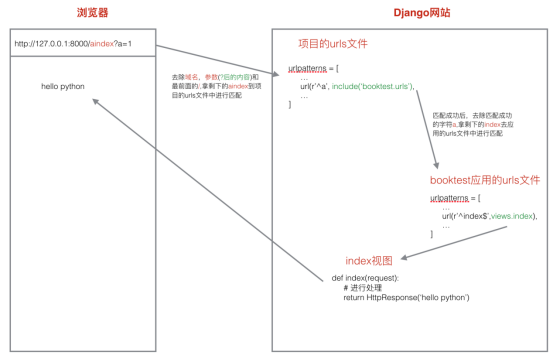
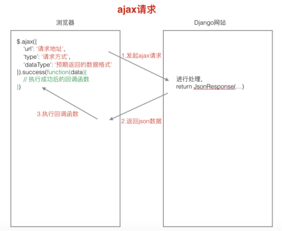

原文连接:https://www.cnblogs.com/yifchan/p/python-1-27.html
Django1.8.2中文文档：Django1.8.2中文文档
视图
视图的功能
接收请求，进行处理，与M和T进行交互，返回应答。
返回html内容 HttpResponse，也可能重定向 redirect,还可以返回json数据。
视图函数的使用
使用
1)定义视图函数
request参数必须有。是一个HttpRequest类型的对象。参数名可以变化，但最好不要更改。
2)配置url
建立url和视图函数之间的对应关系。
url配置的过程
- 1)在项目的urls文件中包含具体应用的urls文件，在具体应用的urls文件中包含具体url和视图的对应关系。
- 2)url配置项是定义在一个名叫urlpatterns的列表中，其中的每一个元素就是一个配置项，每一个配置项都调用url函数。
如下
test1000/url.py
urlpatterns = [
url(r'^admin/', admin.site.urls),
url(r'^', include('booktest.urls')), # 包含booktest应用中的路由文件
]booktest/url.py
urlpatterns = [
url(r'^index/', views.index), # 显示图书信息
url(r'^create/', views.create), # 添加一本书籍
url(r'^delete(\d+)/', views.delete), # 删除一本书籍
]
url匹配的过程
url匹配图解

匹配示例：
url:http://127.0.0.1:8000/aindex?a=1
- 1) 去除域名和后面的参数，剩下/aindex,再把前面的/去掉，剩下aindex
- 2) 拿aindex先到项目的url.py文件中进行从上到下的匹配，匹配成功之后执行后面对应的处理动作，就是把匹配成功的部分a字符去除，然后拿剩下的部分index到应用的urls.py文件中再进行从上到下的匹配。
- 3) 如果匹配成功则调用相应的视图产生内容返回给客户端。如果匹配失败则产生404错误。
错误视图
当我们在开发时，可以设置settings文件里面的DEBUG=True，但当我们要上线产品时，应该设置为False，否则会把网站的信息暴露出来。
开发时：
DEBUG = True
ALLOWED_HOSTS = []要上线时：
DEBUG = True
ALLOWED_HOSTS = ['*']
404: 找不到页面。可能原因
- a)url没有配置
- b)url配置错误
- c)浏览器url’/’问题
500: 服务器端的错误。可能原因
- a)视图出错
自定义404页面
修改为上线模式后，在templates下新建并编写一个404.html，即可。
在使用这个页面的过程中，Django会传过来一个模板变量，{{ request_path }}，表示用户请求路径。
500错误页面同理。
捕捉url参数
进行url匹配时，把所需要的捕获的部分设置成一个正则表达式组，这样django框架就会自动把匹配成功后相应组的内容作为参数传递给视图函数。
1)位置参数
位置参数，参数名可以随意指定
2)关键字参数：在位置参数的基础上给正则表达式组命名即可。
?P<组名>
关键字参数，视图中参数名必须和正则表达式组名一致.
捕获url参数示例：
url(r'^delete(\d+)/', views.delete), # 捕获url参数：位置参数
url(r'^delete(?P<bid>\d+)/', views.delete), # 捕获url参数：关键字参数
def delete(request, bid):
"""删除一本书籍"""
# 1.获取书籍对象
book = models.BookInfo.objects.get(id=bid)
# 2.删除书籍
book.delete()
# 3.重定向
return redirect('/index')注意，使用关键字参数时，视图中的参数名应该和正则表达式中的参数名一致
普通登录案例
普通登录案例项目分析
1)显示出登录页面
- a)设计url，通过浏览器访问 http://127.0.0.1:8000/login 时显示登录页面。
- b)设计url对应的视图函数login。
- c)编写模板文件login.html。
| url | 视图 | 模板文件 |
| /login | login | login.html |
2)登录校验功能
- a)设计url,点击登录页的登录按钮发起请求http://127.0.0.1:8000/login_check时进行登录校验。
- b)设计url对应的视图函数login_check。
- 接收表单提交过来的数据。
- 进行登录校验，若用户名密码正确则跳转到登录成功页。若失败在跳转到登录页面。
- c)登录成功后跳转到首页。
| url | 视图 | 模板文件 |
| /login_check | login_check | 无 |
普通登录示例代码
定义login.html页面


<!DOCTYPE html>
<html lang="en">
<head>
<meta charset="UTF-8">
<title>Login</title>
<meta name="viewport" content="width=device-width, initial-scale=1">
</head>
<body>
<form action="/login_check/" method="post">
<label for="username">用户:
<input type="text" id="username" name="username">
</label><br />
<label for="password">密码:
<input type="password" id="password" name="password">
</label><br />
<input type="submit" value="登录">
</form>
</body>
</html>编写login函数
def login(request):
"""登录处理函数"""
return render(request, "booktest/login.html")配置login和login_check路由
url(r'^login/$', views.login),url(r'^login_check/$', views.login_check),编写login_check函数
def login_check(request):
# 1.获取用户名和密码
username = request.POST.get("username")
password = request.POST.get("password")
# 2.进行校验
# 3.返回应答
if username == "yifchan" and password == "yifchan":
return redirect("/index")
else:
return HttpResponse("账号或密码错误")
HttpReqeust对象
服务器接收到http协议的请求后，会根据报文创建HttpRequest对象，这个对象不需要我们创建，直接使用服务器构造好的对象就可以。
视图的第一个参数必须是HttpRequest对象，即request，在django.http模块中定义了HttpRequest对象的API。
属性
下面除非特别说明，属性都是只读的。
| path | 一个字符串，表示请求的页面的完整路径，不包含域名和参数部分。 |
| method | 一个字符串，表示请求使用的HTTP方法，常用值包括：'GET'、'POST'。 在浏览器中给出地址发出请求采用get方式，如超链接。 在浏览器中点击表单的提交按钮发起请求，如果表单的method设置为post则为post请求。 |
| encoding |
一个字符串，表示提交的数据的编码方式。如果为None则表示使用浏览器的默认设置，一般为utf-8。 这个属性是可写的，可以通过修改它来修改访问表单数据使用的编码，接下来对属性的任何访问将使用新的encoding值。 |
| GET | QueryDict类型对象，类似于字典，包含get请求方式的所有参数。 |
| POST | QueryDict类型对象，类似于字典，包含post请求方式的所有参数。 |
| FILES | 一个类似于字典的对象，包含所有的上传文件。 |
| COOKIES | 一个标准的Python字典，包含所有的cookie，键和值都为字符串。 |
| session | 一个既可读又可写的类似于字典的对象，表示当前的会话，只有当Django 启用会话的支持时才可用，详细内容见"状态保持"。 |
QueryDict对象
- 定义在django.http.QueryDict
- HttpRequest对象的属性GET、POST都是QueryDict类型的对象
- 与python字典不同，QueryDict类型的对象用来处理同一个键带有多个值的情况
方法get()
根据键获取值
如果一个键同时拥有多个值将获取最后一个值
如果键不存在则返回None值，可以设置默认值进行后续处理
dict.get('键',默认值)
# 可简写为
dict['键']
方法getlist()
根据键获取值，值以列表返回，可以获取指定键的所有值
如果键不存在则返回空列表[]，可以设置默认值进行后续处理
dict.getlist('键',默认值)
方法dict['键']
根据键获取值
和get()方法差不多，但没有值的时候会报错；
取QueryDict值示例
from django.http.request import QueryDict
q = QueryDict('a=1&b=2&c=3')
q['a']
q['b']
q.get('a')
q.get('c', default="")应注意使用[]取值时如果没有值会报错，而get只会返回一个none，不会报错，所以一般使用get；
此外，QueryDict和字典的不同之处在于可以一个key对应多个value，但会取后面的那个value，
想要获取该key所有的value，可以通过dict.getlist('键',默认值)进行获取。
ajax请求
ajax，即异步的javascript。在不全部加载某一个页面部的情况下，对页面进行局的刷新，ajax请求都在后台。
图片，css文件，js文件都是静态文件。

1)发起ajax请求：jquery发起
2)执行相应的视图函数，返回json内容
3)执行相应的回调函数。通过判断json内容，进行相应处理。
python和ajax结合使用
因为要引入jquery，一般对于这些静态文件，我们会创建static文件，将静态文件放入里面，在settings文件里面进行配置。
STATIC_URL = '/static/'
STATICFILES_DIRS = [os.path.join(BASE_DIR, 'static')] # 设置静态文件的保存目录在static文件夹下新建js，css等文件；
在js中引入jquery文件；
编写ajax_test.html
<!DOCTYPE html>
<html lang="en">
<head>
<meta charset="UTF-8">
<title>Title</title>
<meta name="viewport" content="width=device-width, initial-scale=1">
<script src="/static/js/jquery-3.3.1.js"></script>
<script>
$(function () {
{# 绑定btnAjax的click事件#}
$('#btnAjax').click(function () {
$.ajax({
'url': '/ajax_handle',
'type': 'get',
'datatype': 'json'
}).done(function (data) {
// 处理后端拿过来的数据
// console.log(data.res);
if (data.res == '1') {
$('#message').show().html("提示信息");
}
})
})
})
</script>
<style>
#message {display: none;color: red;}
</style>
</head>
<body>
<input type="button" id="btnAjax" value="ajax请求">
<div id="message"></div>
</body>
</html>编写ajax_test函数
def ajax_test(request):
"""返回ajax页面"""
return render(request, "booktest/ajax_test.html")设计ajax_test，ajax_handle的url
url(r'^ajax_test/$', views.ajax_test),
url(r'^ajax_handle/$', views.ajax_handle),编写ajax_handle处理函数
def ajax_handle(request):
"""ajax处理函数"""
return JsonResponse({"res": 1})关于ajax调试，可以使用浏览器的network窗口，如果出现问题，就到network窗口，点击出错的请求，再点击response，就会有报错详情了；
ajax同步和异步
同步：等别人执行完再执行；
异步：不管别人有没有执行完，就执行；
ajax默认是异步的，即不等ajax请求返回数据，就执行ajax后面的代码，如果想要实现ajax通过不，可以添加'async': false：
$.ajax({
'url': '/ajax_handle',
'dataType': 'json',
'async': false, // 同步的ajax请求，默认为True
})ajax默认是异步的请求
<!DOCTYPE html>
<html lang="en">
<head>
<meta charset="UTF-8">
<title>Title</title>
<meta name="viewport" content="width=device-width, initial-scale=1">
<script src="/static/js/jquery-3.3.1.js"></script>
<script>
$(function () {
// 绑定btnAjax的click事件
$('#btnAjax').click(function () {
console.log("1");
$.ajax({
'url': '/ajax_handle',
'type': 'get',
'datatype': 'json'
}).done(function (data) {
// 处理后端拿过来的数据
console.log("2");
})
console.log("3");
})
})
</script>
<style>
#message {display: none;color: red;}
</style>
</head>
<body>
<input type="button" id="btnAjax" value="ajax请求">
<div id="message"></div>
</body>
</html>这个时候，是默认的异步ajax，就会依次弹出1,3,2；
同步的ajax请求，需要在ajax中添加 'async': false,
<!DOCTYPE html>
<html lang="en">
<head>
<meta charset="UTF-8">
<title>Title</title>
<meta name="viewport" content="width=device-width, initial-scale=1">
<script src="/static/js/jquery-3.3.1.js"></script>
<script>
$(function () {
// 绑定btnAjax的click事件
$('#btnAjax').click(function () {
console.log("1");
$.ajax({
'url': '/ajax_handle',
'type': 'get',
'datatype': 'json',
'async': false, // 同步的ajax请求，默认为True
}).done(function (data) {
// 处理后端拿过来的数据
console.log("2");
})
console.log("3");
})
})
</script>
<style>
#message {display: none;color: red;}
</style>
</head>
<body>
<input type="button" id="btnAjax" value="ajax请求">
<div id="message"></div>
</body>
</html>这个时候，是同步的ajax，就会依次弹出1,2,3；
ajax登录案例
编写login_ajax.html页面
<!DOCTYPE html>
<html lang="en">
<head>
<meta charset="UTF-8">
<title>Login</title>
<meta name="viewport" content="width=device-width, initial-scale=1">
<script src="/static/js/jquery-3.3.1.js"></script>
<script>
$(function () {
// 绑定btnLogin的click事件
$('#btnLogin').click(function () {
// 1.获取用户输入的用户名和密码
$username = $('#username').val();
$password = $('#password').val();
// 2.携带用户名和密码，发起ajax请求，login_ajax_check
$.ajax({
'url': '/login_ajax_check/',
'type': 'post',
'data': {'username': $username, 'password': $password},
'datatype': 'json',
}).done(function (data) {
// 登录成功，{'res': 1}
// 登录失败，{'res': 0}
if (data.res == '0') {
console.log("res0");
$('#error_message').show()
}
else {
// 登录成功则跳转到首页
console.log("res1");
location.href = '/index';
}
});
})
})
</script>
<style>
#error_message {
display: none;
color: red;
}
</style>
</head>
<body>
<div>
<label for="username">用户:
<input type="text" id="username" name="username">
</label><br />
<label for="password">密码:
<input type="password" id="password" name="password">
</label><br />
<div id="error_message">账号名或密码错误</div>
<input type="button" id="btnLogin" value="登录">
</div>
</body>
</html>编写login_ajax函数
def login_ajax(request):
"""返回ajax登录页面"""
return render(request, "booktest/login_ajax.html")设计login_ajax路由：
url(r'^login_ajax/$', views.login_ajax),点击登录后ajax发送消息给后端路由，
编写login_ajax_check登录校验函数
def login_ajax_check(request):
# 1.获取用户名和密码
# 如果是ajax提交的，那么这里的get中的值应该和ajax发过来的值一样；
username = request.POST.get("username")
password = request.POST.get("password")
# 2.进行校验
# 3.返回应答
if username == "yifchan" and password == "yifchan":
return JsonResponse({"res": 1})
else:
return JsonResponse({"res": 0})设计 login_ajax_check 路由：
url(r'^login_ajax_check/$', views.login_ajax_check),注意：ajax的请求在后台，不要返回页面或重定向，无效；比如当前端发登录的ajax给后端，后端校验用户名密码正确后，不能直接重定向到index页面，而是返回状态码，经过ajax判断状态码后重定向到index页面，即由前端重定向；